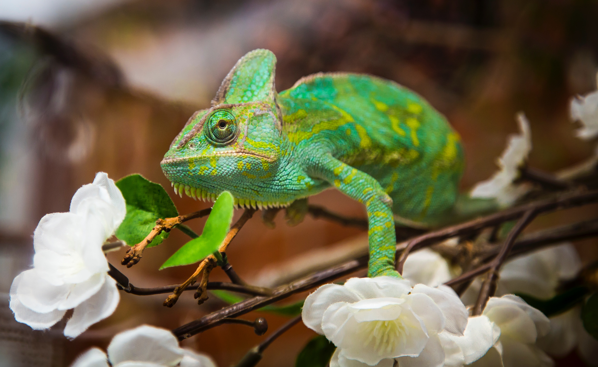
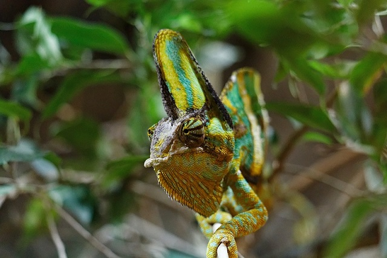

Preparation and care
The average length of a chameleon, including the tail, is only 18 to 24 inches. Females typically measure between 10 and 13 inches. Since they naturally inhabit trees, they will require a high cage with lots of climbing vegetation.
Cages for these lizards must be at least 4' L x 4' H in size. The majority of their time will be spent lazily climbing the branches and napping while basking. The cage's height is more crucial than its width, but you shouldn't omit any room.
Tropical areas with hot, muggy weather are home to chameleons. They require a humidity setting of between 65% and 80%. They can tolerate temperatures of 70 to 90 degrees Fahrenheit without feeling uncomfortable. You can purchase gauges to keep an eye on the enclosure's humidity and temperature conditions.
You need to provide water frequently. By sucking water droplets off of plants in their cage, they obtain the majority of their hydration. You can purchase automatic misting systems that activate every few hours to keep the plants hydrated and provide your chameleon with hydration.
Chameleons are considered insectivores, meaning they eat mainly insects. Adults should eat one big meal every other day.
Most used food: Crickets, Stick bugs, Locust, Mantids, Grasshoppers.
They have lightning-fast tongues, so prepare for quick grabs. Their tongues can be twice the length of their whole body!. Best practice to use tongs if you plan to hand-feed your chameleon.
Calcium is another essential mineral in their diet. Most people dip gut-loaded insects into the powder to get them to eat nutritional needs in one swoop.
Another very important is vitamin d3, and do not overdose, because can cause serious problems to a chameleon, while this vitamin is essential, it can be obtained from other sources UV light bulbs, so make sure lighting, temperature, humidity, and diet correlate with one another.
Chameleons love trees, spending most of their time clinging to branches. You have to accommodate their needs by providing (preferably) live plants in their enclosure.
Some examples: Rubber tree, Golden pothos, Jade, Hibiscus, Spider plant, Weeping fig.